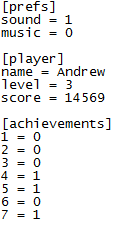

ini_write_string
Writes a string to an .ini file
Syntax :
ini_write_string(section, key, value);
| Argument | Description |
|---|---|
| section | The section of the .ini to write to. |
| key | The key within the relevant section of the .ini to write to. |
| value | The string to write to the relevant destination. |
Returns : N/A
Description
You can use this function to write a string (text) to an ini data file. Ini files are split into sections and then each section is subsequently split into key - value
pairs. So a typical ini file would look something like this :

Example :
ini_open("savedata.ini");
ini_write_string("Save", "Player", global.Name);
ini_close();
The above code opens an ini file for reading and writing, then writes the string stored in the global variable "Name" to the section "Save" with the key "Player" before closing the file again.
Back : Ini Files
Next : ini_read_real